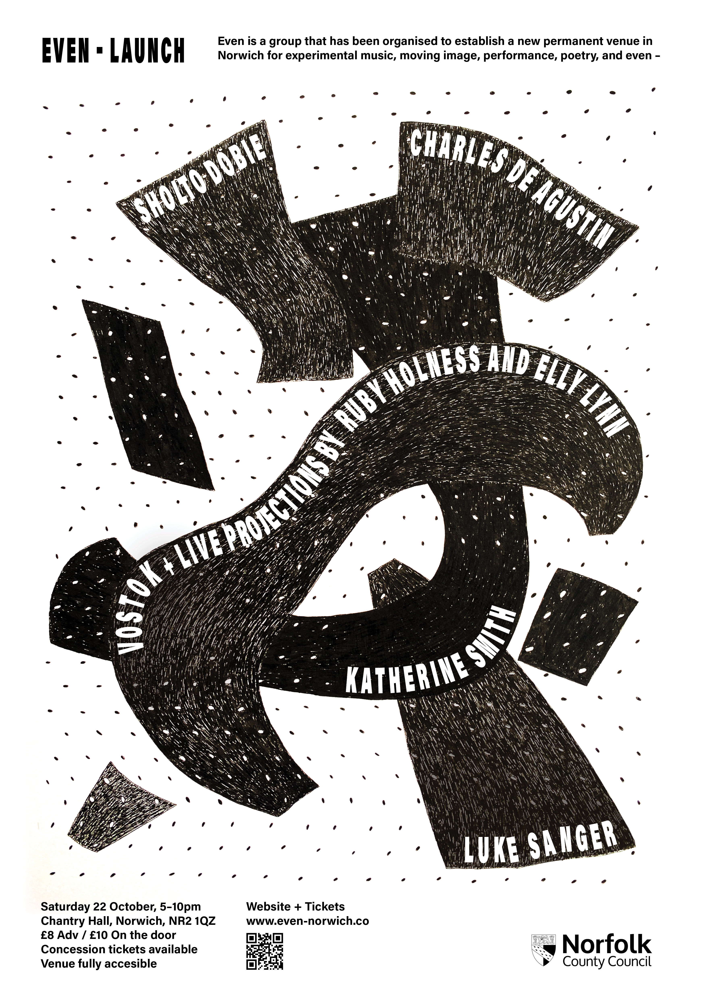
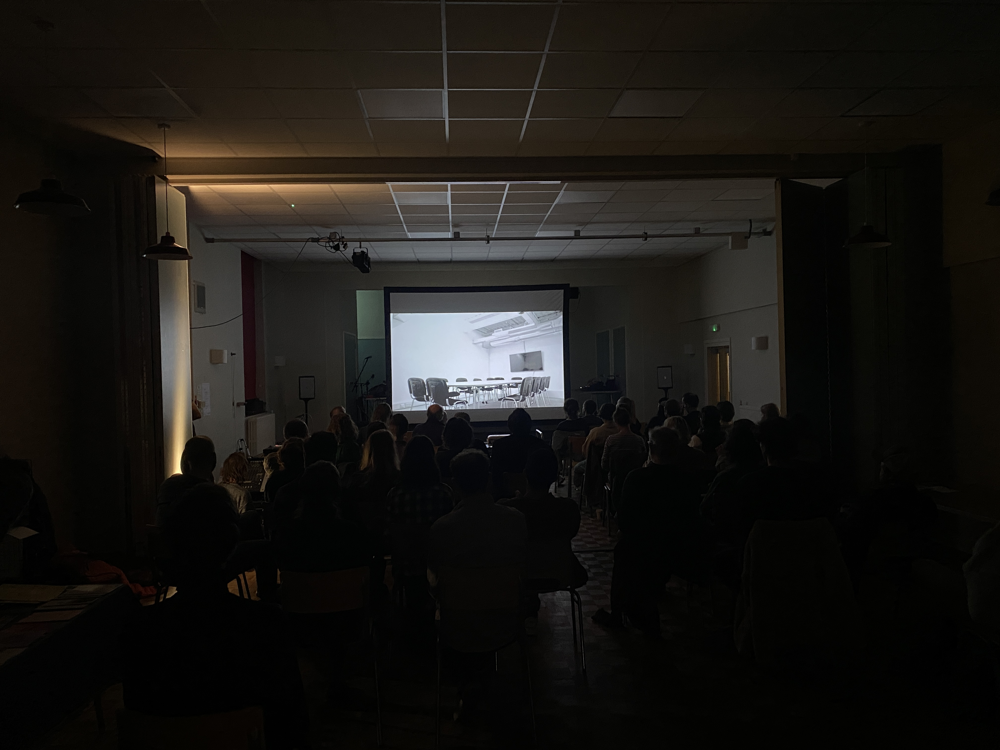
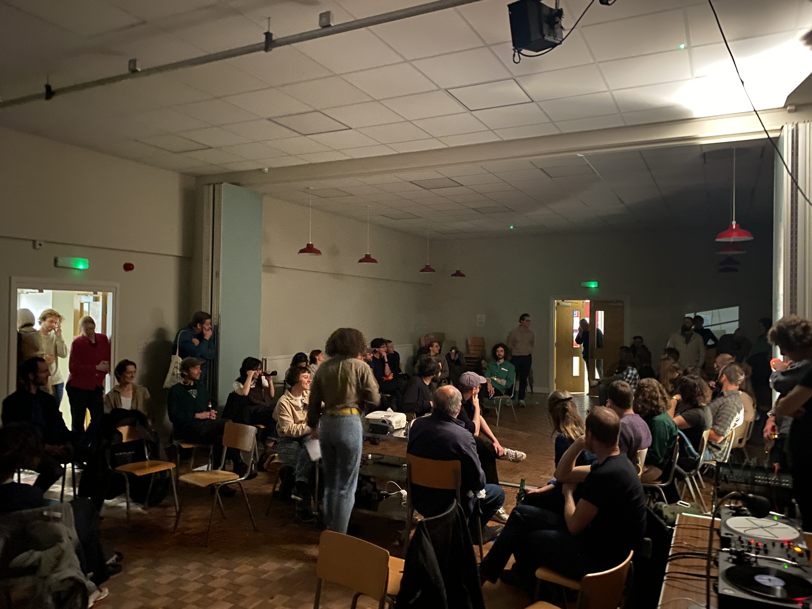

I worked with three other people to produce the Even launch event in October 2022. Our intention was to find a permanent space for experimental perfomance, music and film. For my part, I was invested in bringing artist moving image into non-normative exhibition spaces and experimenting with different contexts for open discussions. The project was a valuable learning experience, understanding first-hand the graft that goes into starting a DIY project from scratch with no fixed venue and no funds (bar £500 from the council to provide food and refreshments for artists) and realising that the community in Norwich was equally dedicated to the project (multiple sold out events!). The group doesn't exist anymore and I no longer live in Norwich, but since this effort two independent venues have been set up.
 Reading Time dir. Charles de Agustin
